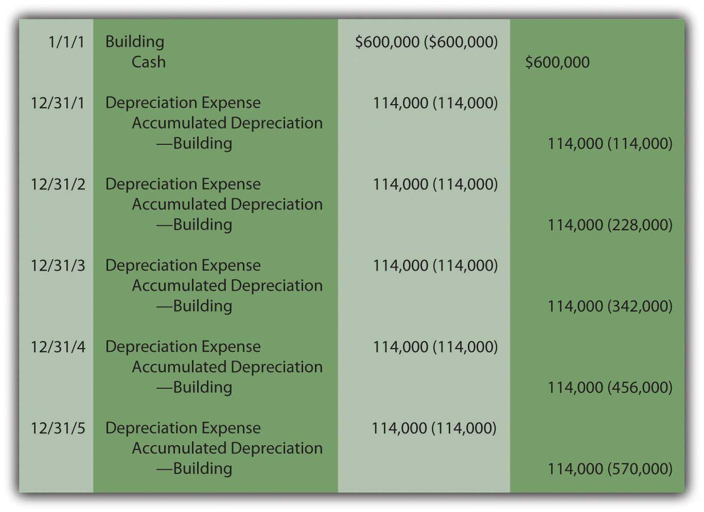

At the end of this section, students should be able to meet the following objectives:
Question: Businesses hold numerous types of assets, such as receivables, inventory, cash, investments, and patents. Proper classification is important for the clarity of the reported information. What requirements must be met for an asset to be classified as part of a business’s property and equipment?
Answer: To be included within the property and equipment category, an asset must first have tangible physical substance and be expected to be used for longer than a single year. Furthermore, it must serve to generate revenues within the normal operating activities of the business. It cannot be held for immediate resale, like inventory.
A building used as a warehouse and machinery operated in the production of inventory both meet these characteristics. Other examples include computers, furniture, fixtures, and equipment. Conversely, land acquired as a future plant site and a building held for speculative purposes are both classified with investments (or, possibly, “other assets”) on the owner’s balance sheet rather than as property and equipment. Neither is used at the current time to help generate operating revenues.
Question: The basis for reporting property and equipment is historical cost. What amounts are included in determining the cost of such assets? Assume, for example, that Wal-Mart purchases a parcel of land and then constructs one of its retail stores on the site. Wal-Mart also buys a new cash register to use at this outlet. Initially, such assets are reported at cost. For property and equipment, how is historical cost defined?
Answer: In the previous chapter, the cost of a company’s inventory was identified as the sum of all normal and necessary amounts paid to get the merchandise into condition and position to be sold. Property and equipment is not bought for resale so this rule cannot be followed here without some modification. Instead, all expenditures are included within the cost of property and equipment if the amounts are normal and necessary to get the asset into condition and position to assist the company in earning revenues. That is their purpose: to generate profits by helping to create the sale of goods and services.
Land can serve as an example. When purchased, the various normal and necessary expenditures made by the owner to ready the property for its intended use are capitalized to arrive at the cost to be reported. These amounts include payments made to attain ownership as well as any fees required to obtain legal title. If the land is acquired as a building site, money spent for any needed grading and clearing is also included as a cost of the land rather than as a cost of the building or as an expense. These activities readied the land for its ultimate use.
Buildings, machinery, furniture, equipment and the like are all reported in a similar fashion. For example, the cost of constructing a retail store includes money spent for materials and labor as well as charges for permits and the fees charged by architects and engineers. These are normal and necessary to get the structure into condition and position to help generate revenues.
As another example, the cost of a new cash register might well include shipping charges, installation fees, and training sessions to teach employees to use the asset. These costs all meet the criterion for capitalization. They appear to be normal and necessary to permit use of the asset for its intended purpose. Hence, a new cash register bought for $4,100 might actually be reported as an asset by its owner at $5,300 as follows:
Figure 10.1 Capitalized Cost of Equipment

Link to multiple-choice question for practice purposes: http://www.quia.com/quiz/2092929.html
Question: If a company pays $600,000 on January 1, Year One to rent a building to serve as a store for five years, a prepaid rent account (an asset) is established for that amount. Because the rented facility will be used to generate revenues throughout this period, a portion of the cost is reclassified annually as an expense to comply with the matching principle. At the end of Year One, $120,000 (or one-fifth) of the cost is moved from the asset balance into rent expense by means of an adjusting entry. As a result, the prepaid rent on the balance sheet drops to $480,000, the amount paid for the four remaining years.
If, instead, the company buys a building with an expected five-year life The estimated lives of property and equipment varies widely. For example, in notes to its financial statements as of January 31, 2009, and for the year then ended, Wal-Mart disclosed that the expected lives of its buildings and improvements ranged from five years to fifty. for $600,000, the accounting is quite similar. The initial cost is capitalized to reflect the future economic benefit. Once again, an expense is then recorded at the end of Year One for a portion of this cost to satisfy the matching principle. This expense is referred to as depreciation. Should the Year One depreciation recognized in connection with this acquired building also be $120,000? How is the annual amount of depreciation expense determined for reporting purposes?
Answer: The specific amount of depreciation expense recorded each year for buildings, machinery, furniture, and the like is based on four variables:
After total cost is computed, officials estimate the useful life based on company experience with similar assets in the past or other sources of information such as guidelines provided by the manufacturer.As mentioned previously, land does not have a finite life and is, therefore, not subjected to the recording of depreciation expense. In a similar fashion, officials arrive at an expected residual value—an estimate of the likely worth of the asset at the end of its useful life to the company. Because both life expectancy and residual value are no more than guesses, depreciation is simply a mechanically derived pattern that allocates the asset’s cost to expense over its expected years of use.
To illustrate, assume a building is purchased by a company on January 1, Year One, for cash of $600,000. Based on experience with similar assets, officials believe that this structure will be worth only $30,000 at the end of an expected five-year life. U.S. GAAP does not require any specific computational method for determining the annual allocation of the asset’s cost to expense. Over fifty years ago, the Committee on Accounting Procedure (the authoritative body at the time) issued Accounting Research Bulletin 43 which stated that any method could be used to determine annual depreciation if done in a “systematic and rational manner.” This guidance remains in effect today.
Consequently, a vast majority of reporting companies (including Wal-Mart) have chosen to adopt the straight-line method to assign the cost of property and equipment to expense over their useful lives. The estimated residual value is subtracted from cost to arrive at the asset’s depreciable base. This figure is then expensed evenly over the expected life. It is systematic and rational: Straight-line depreciationMethod used to calculate the annual amount of depreciation expense by subtracting any estimated residual value from cost and then dividing this depreciable base by the asset’s estimated useful life; a majority of companies in the United States use this method for financial reporting purposes. allocates an equal expense to each period in which the asset is used to generate revenue.
Straight-line method:
(cost – estimated residual value) = depreciable base depreciable base/expected useful life = annual depreciation ($600,000 – $30,000) = $570,000/5 years = depreciation expense of $114,000 per year
Question: After depreciation has been calculated for the current period, how is this allocation of the asset’s cost to expense recorded within the company’s accounting system?
Answer: An adjusting entry is prepared at the end of each period to move the assigned cost from the asset account on the balance sheet to expense on the income statement. To reiterate, the building account is not directly reduced. A separate negative or contra account (accumulated depreciation) is created to reflect the total amount of the cost that has been expensed to date. Thus, the asset’s present book value as well as its original historical cost are both still in evidence.
The entries to record the cost of acquiring this building and the annual depreciation expense over the five-year life are as follows. The straight-line method is used here to determine the individual allocations to expense. Now that students should be familiar with using debits and credits for recording, the number in parenthesis is included (where relevant to the discussion) to indicate the total account balance after the entry is posted. As indicated in an earlier chapter, revenues, expenses, and dividends are closed out each year. Thus, the depreciation expense reported on each income statement measures only the expense assigned to that period.
Figure 10.2 Building Acquisition and Straight-Line Depreciation
Because the straight-line method is applied, depreciation expense is a consistent $114,000 each year. As a result, the net book value reported on the balance sheet drops during the asset’s useful life from $600,000 to $30,000. At the end of the first year, it is $486,000 ($600,000 cost minus accumulated depreciation $114,000). At the end of the second year, net book value has been reduced to $372,000 ($600,000 cost minus accumulated depreciation of $228,000). This pattern continues over the entire five years.
Link to multiple-choice question for practice purposes: http://www.quia.com/quiz/2092906.html
Tangible operating assets with lives of over a year are initially reported at historical cost. All expenditures are capitalized if they are normal and necessary to put the property into the position and condition to assist the company in generating revenue. If the asset has a finite life, this cost is then assigned to expense over the years of expected use in some systematic and rational pattern. Many companies apply the straight-line method, which assigns an equal amount to every full year. In that approach, the expected residual value is subtracted from cost to get the depreciable base that is allocated evenly over the anticipated years of use by the company.